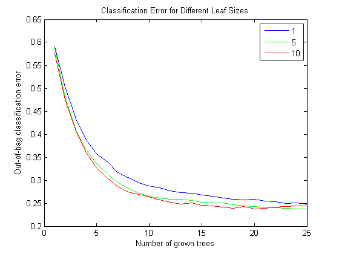
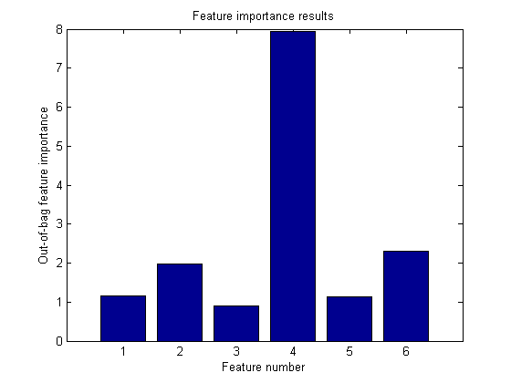
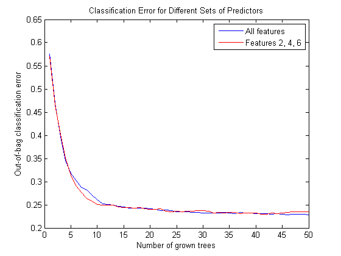
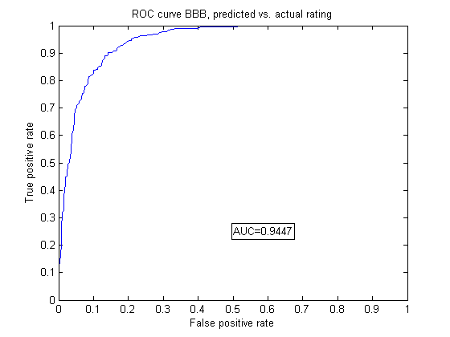
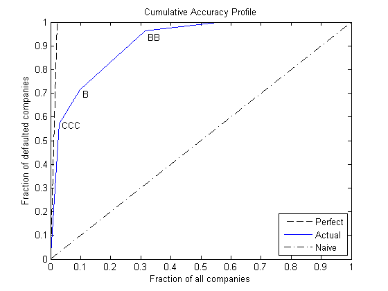
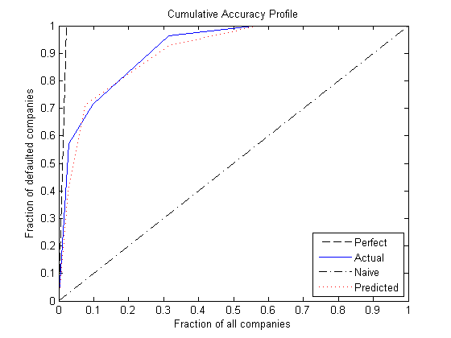

Credit Rating by Bagging Decision Trees
This example shows how to build an automated credit rating tool.
One of the fundamental tasks in credit risk management is to assign a credit grade to a borrower. Grades are used to rank customers according to their perceived creditworthiness: better grades mean less risky customers; similar grades mean similar level of risk. Grades come in two categories: credit ratings and credit scores. Credit ratings are a small number of discrete classes, usually labeled with letters, such as 'AAA', 'BB-', etc. Credit scores are numeric grades such as '640' or '720'. Credit grades are one of the key elements in regulatory frameworks, such as Basel II (see Basel Committee on Banking Supervision [3]).
Assigning a credit grade involves analyzing information on the borrower. If the borrower is an individual, information of interest could be the individual's income, outstanding debt (mortgage, credit cards), household size, residential status, etc. For corporate borrowers, one may consider certain financial ratios (e.g., sales divided by total assets), industry, etc. Here, we refer to these pieces of information about a borrower as features or predictors. Different institutions use different predictors, and they may also have different rating classes or score ranges to rank their customers. For relatively small loans offered to a large market of potential borrowers (e.g., credit cards), it is common to use credit scores, and the process of grading a borrower is usually automated. For larger loans, accessible to small- to medium-sized companies and larger corporations, credit ratings are usually used, and the grading process may involve a combination of automated algorithms and expert analysis.
There are rating agencies that keep track of the creditworthiness of companies. Yet, most banks develop an internal methodology to assign credit grades for their customers. Rating a customer internally can be a necessity if the customer has not been rated by a rating agency, but even if a third-party rating exists, an internal rating offers a complementary assessment of a customer's risk profile.
This example shows how MATLAB® can help with the automated stage of a credit rating process. In particular, we take advantage of one of the statistical learning tools readily available in Statistics Toolbox™, a classification algorithm known as a bagged decision tree.
We assume that historical information is available in the form of a data set where each record contains the features of a borrower and the credit rating that was assigned to it. These may be internal ratings, assigned by a committee that followed policies and procedures already in place. Alternatively, the ratings may come from a rating agency, whose ratings are being used to "jump start" a new internal credit rating system.
The existing historical data is the starting point, and it is used to train the bagged decision tree that will automate the credit rating. In the vocabulary of statistical learning, this training process falls in the category of supervised learning. The classifier is then used to assign ratings to new customers. In practice, these automated or predicted ratings would most likely be regarded as tentative, until a credit committee of experts reviews them. The type of classifier we use here can also facilitate the revision of these ratings, because it provides a measure of certainty for the predicted ratings, a classification score.
In practice, one needs to train a classifier first, then use it to assign a credit rating to new customers, and finally one also needs to profile or evaluate the quality or accuracy of the classifier, a process also known as validation or back-testing. We discuss some readily available back-testing tools, as well.
Contents
Loading the Existing Credit Rating Data
We load the historical data from the comma-delimited text file CreditRating_Historical.dat. We choose to work with text files here, but users with access to Database Toolbox™ can certainly load this information directly from a database.
The data set contains financial ratios, industry sector, and credit ratings for a list of corporate customers. This is simulated, not real data. The first column is a customer ID. Then we have five columns of financial ratios. These are the same ratios used in Altman's z-score (see Altman [1]; see also Loeffler and Posch [4] for a related analysis).
- Working capital / Total Assets (WC_TA)
- Retained Earnings / Total Assets (RE_TA)
- Earnings Before Interests and Taxes / Total Assets (EBIT_TA)
- Market Value of Equity / Book Value of Total Debt (MVE_BVTD)
- Sales / Total Assets (S_TA)
Next, we have an industry sector label, an integer value ranging from 1 to 12. The last column has the credit rating assigned to the customer. We load the data into a dataset array.
creditDS = dataset('file','CreditRating_Historical.dat','delimiter',',');
We copy the features into a matrix X, and the corresponding classes, the ratings, into a vector Y. This is not a required step, since we could access this information directly from the dataset array, but we do it here to simplify some repeated function calls below.
The features to be stored in the matrix X are the five financial ratios, and the industry label. Industry is a categorical variable, nominal in fact, because there is no ordering in the industry sectors. The response variable, the credit ratings, is also categorical, though this is an ordinal variable, because, by definition, ratings imply a ranking of creditworthiness. We can use this variable "as is" to train our classifier. Here we choose to copy it into an ordinal array because this way the outputs come out in the natural order of the ratings and are easier to read. The ordering of the ratings is established by the cell array we pass as a third argument in the definition of Y. The credit ratings can also be mapped into numeric values, which can be useful to try alternative methods to analyze the data (e.g., regression). It is always recommended to try different methods in practice.
X = [creditDS.WC_TA creditDS.RE_TA creditDS.EBIT_TA creditDS.MVE_BVTD... creditDS.S_TA creditDS.Industry]; Y = ordinal(creditDS.Rating,[],{'AAA' 'AA' 'A' 'BBB' 'BB' 'B' 'CCC'});
We use the predictors X and the response Y to fit a particular type of classification ensemble called a bagged decision tree. "Bagging," in this context, stands for "bootstrap aggregation." The methodology consists in generating a number of sub-samples, or bootstrap replicas, from the data set. These sub-samples are randomly generated, sampling with replacement from the list of customers in the data set. For each replica, a decision tree is grown. Each decision tree is a trained classifier on its own, and could be used in isolation to classify new customers. The predictions of two trees grown from two different bootstrap replicas may be different, though. The ensemble aggregates the predictions of all the decision trees that are grown for all the bootstrap replicas. If the majority of the trees predict one particular class for a new customer, it is reasonable to consider that prediction to be more robust than the prediction of any single tree alone. Moreover, if a different class is predicted by a smaller set of trees, that information is useful, too. In fact, the proportion of trees that predict different classes is the basis for the classification scores that are reported by the ensemble when classifying new data.
Constructing the Tree Bagger
The first step to construct our classification ensemble will be to find a good leaf size for the individual trees; here we try sizes of 1, 5 and 10. (See Statistics Toolbox documentation for more on TreeBagger.) We start with a small number of trees, 25 only, because we mostly want to compare the initial trend in the classification error for different leaf sizes. For reproducibility and fair comparisons, we reinitialize the random number generator, which is used to sample with replacement from the data, each time we build a classifier.
leaf = [1 5 10]; nTrees = 25; rng(9876,'twister'); savedRng = rng; % save the current RNG settings color = 'bgr'; for ii = 1:length(leaf) % Reinitialize the random number generator, so that the % random samples are the same for each leaf size rng(savedRng); % Create a bagged decision tree for each leaf size and plot out-of-bag % error 'oobError' b = TreeBagger(nTrees,X,Y,'oobpred','on','cat',6,'minleaf',leaf(ii)); plot(b.oobError,color(ii)); hold on; end xlabel('Number of grown trees'); ylabel('Out-of-bag classification error'); legend({'1', '5', '10'},'Location','NorthEast'); title('Classification Error for Different Leaf Sizes'); hold off;
The errors are comparable for the three leaf-size options. We will therefore work with a leaf size of 10, because it results in leaner trees and more efficient computations.
Note that we did not have to split the data into training and test subsets. This is done internally, it is implicit in the sampling procedure that underlies the method. At each bootstrap iteration, the bootstrap replica is the training set, and any customers left out ("out-of-bag") are used as test points to estimate the out-of-bag classification error reported above.
Next, we want to find out whether all the features are important for the accuracy of our classifier. We do this by turning on the feature importance measure (oobvarimp), and plot the results to visually find the most important features. We also try a larger number of trees now, and store the classification error, for further comparisons below.
nTrees = 50; leaf = 10; rng(savedRng); b = TreeBagger(nTrees,X,Y,'oobvarimp','on','cat',6,'minleaf',leaf); bar(b.OOBPermutedVarDeltaError); xlabel('Feature number'); ylabel('Out-of-bag feature importance'); title('Feature importance results'); oobErrorFullX = b.oobError;
Features 2, 4 and 6 stand out from the rest. Feature 4, market value of equity / book value of total debt (MVE_BVTD), is the most important predictor for this data set. This ratio is closely related to the predictors of creditworthiness in structural models, such as Merton's model [5], where the value of the firm's equity is compared to its outstanding debt to determine the default probability.
Information on the industry sector, feature 6 (Industry), is also relatively more important than other variables to assess the creditworthiness of a firm for this data set.
Although not as important as MVE_BVTD, feature 2, retained earnings / total assets (RE_TA), stands out from the rest. There is a correlation between retained earnings and the age of a firm (the longer a firm has existed, the more earnings it can accumulate, in general), and in turn the age of a firm is correlated to its creditworthiness (older firms tend to be more likely to survive in tough times).
Let us fit a new classification ensemble using only predictors RE_TA, MVE_BVTD, and Industry. We compare its classification error with the previous classifier, which uses all features.
X = [creditDS.RE_TA creditDS.MVE_BVTD creditDS.Industry]; rng(savedRng); b = TreeBagger(nTrees,X,Y,'oobpred','on','cat',3,'minleaf',leaf); oobErrorX246 = b.oobError; plot(oobErrorFullX,'b'); hold on; plot(oobErrorX246,'r'); xlabel('Number of grown trees'); ylabel('Out-of-bag classification error'); legend({'All features', 'Features 2, 4, 6'},'Location','NorthEast'); title('Classification Error for Different Sets of Predictors'); hold off;
The accuracy of the classification does not deteriorate significantly when we remove the features with relatively low importance (1, 3, and 5), so we will use the more parsimonious classification ensemble for our predictions.
In this example, we have started with a set of six features only, and used the feature importance measure of the classifier, and the out-of-bag classification error as criteria to screen out three of the variables. Feature selection can be a time consuming process when the initial set of potential predictors contains dozens of variables. Besides the tools we have used here (variable importance and a "visual" comparison of out-of-bag errors), other variable selection tools in Statistics Toolbox can be helpful for these types of analyses (see documentation). However, in the end, a successful feature selection process requires a combination of quantitative tools and an analyst's judgement.
For example, the variable importance measure we used here is a ranking mechanism that estimates the relative impact of a feature by measuring how much the predictive accuracy of the classifier deteriorates when this feature's values are randomly permuted. The idea is that when the feature in question adds little to the predictive power of the classifier, using altered (in this case permuted) values should not impact the classification results. Relevant information, on the other hand, cannot be randomly swapped without degrading the predictions. Now, if two highly correlated features are important, they will both rank high in this analysis. In that case, keeping one of these features should suffice for accurate classifications, but one would not know that from the ranking results alone. One would have to check the correlations separately, or use an expert's judgement. That is to say, tools like variable importance or sequentialfs can greatly help for feature selection, but an analyst's judgment is a key piece in this process.
At this point, the classifier could be saved (e.g., save classifier.mat b), to be loaded in a future session (load classifier) to classify new customers. For efficiency, it is recommended to keep a compact version of the classifier once the training process is finished.
b = b.compact;
Classifying New Data
Here we use the previously constructed classification ensemble to assign credit ratings to new customers. Because the ratings of existing customers need to be reviewed, too, on a regular basis, especially when their financial information has substantially changed, the data set could also contain a list of existing customers under review. We start by loading the new data.
newDS = dataset('file','CreditRating_NewCompanies.dat','delimiter',',');
To predict the credit rating for this new data, we call the predict method on the classifier. The method returns two arguments, the predicted class and the classification score. We certainly want to get both output arguments, since the classification scores contain information on how certain the predicted ratings seem to be. We could copy variables RE_TA, MVE_BVTD and Industry into a matrix X, as before, but since we will make only one call to predict, we can skip this step and use newDS directly.
[predClass,classifScore] = b.predict([newDS.RE_TA newDS.MVE_BVTD...
newDS.Industry]);
At this point, we can create a report. Here we only display on the screen a small report for the first three customers, for illustration purposes, but MATLAB's deployment tools could greatly improve the workflow here. For example, using MATLAB Builder™ JA, credit analysts could run this classification remotely, using a web browser, and get a report, without even having MATLAB on their desktops.
for i = 1:3 fprintf('Customer %d:\n',newDS.ID(i)); fprintf(' RE/TA = %5.2f\n',newDS.RE_TA(i)); fprintf(' MVE/BVTD = %5.2f\n',newDS.MVE_BVTD(i)); fprintf(' Industry = %2d\n',newDS.Industry(i)); fprintf(' Predicted Rating : %s\n',predClass{i}); fprintf(' Classification score : \n'); for j = 1:length(b.ClassNames) if (classifScore(i,j)>0) fprintf(' %s : %5.4f \n',b.ClassNames{j},classifScore(i,j)); end end end
Customer 60644:
RE/TA = 0.22
MVE/BVTD = 2.40
Industry = 6
Predicted Rating : AA
Classification score :
AA : 0.6446
A : 0.3412
BBB : 0.0142
Customer 33083:
RE/TA = 0.24
MVE/BVTD = 1.51
Industry = 4
Predicted Rating : BBB
Classification score :
A : 0.0818
BBB : 0.9182
Customer 63830:
RE/TA = 0.18
MVE/BVTD = 1.69
Industry = 7
Predicted Rating : A
Classification score :
AA : 0.0057
A : 0.6782
BBB : 0.3141
B : 0.0020
Keeping records of the predicted ratings and corresponding scores can be useful for periodic assessments of the quality of the classifier. We store this information here in the dataset array predDS.
predDS = dataset({newDS.ID,'ID'},{predClass,'PredRating'},...
{classifScore,'sAAA','sAA','sA','sBBB','sBB','sB','sCCC'});
This information could be saved, for example, to a comma-delimited text file PredictedRatings.dat using the command
export(predDS,'file','PredictedRatings.dat','delimiter',',')
or written directly to a database using Database Toolbox.
Back-Testing: Profiling the Classification Process
Validation or back-testing is the process of profiling or assessing the quality of the credit ratings. There are many different measures and tests related to this task (see, for example, Basel Committee on Banking Supervision [2]). Here, we focus on the following two questions:
- How accurate are the predicted ratings, as compared to the actual ratings? Here "predicted ratings" refers to those obtained from the automated classification process, and "actual ratings" to those assigned by a credit committee that puts together the predicted ratings and their classification scores, and other pieces of information, such as news and the state of the economy to determine a final rating.
- How well do the actual ratings rank customers according to their creditworthiness? This is done in an ex-post analysis performed, for example, one year later, when it is known which companies defaulted during the year.
The file CreditRating_ExPost.dat contains "follow up" data on the same companies considered in the previous section. It contains the actual ratings that the committee assigned to these companies, as well as a "default flag" that indicates whether the corresponding company defaulted within one year of the rating process (if 1) or not (if 0).
exPostDS = dataset('file','CreditRating_ExPost.dat','delimiter',',');
If this were a new MATLAB session, besides reading the follow up data from CreditRating_ExPost.dat we would need to load the predicted ratings information stored in predDS, for example, with the command
predDS = dataset('file','PredictedRatings.dat','delimiter',',')Comparing predicted ratings vs. actual ratings. The rationale to train an automated classifier is to expedite the work of the credit committee. The more accurate the predicted ratings are, the less time the committee has to spend reviewing the predicted ratings. So it is conceivable that the committee wants to have regular checks on how closely the predicted ratings match the final ratings they assign, and to recommend re-training the automated classifier (and maybe include new features, for example) if the mismatch seems concerning.
The first tool we can use to compare predicted vs. actual ratings is a confusion matrix, readily available in Statistics Toolbox:
C = confusionmat(exPostDS.Rating,predDS.PredRating,... 'order',{'AAA' 'AA' 'A' 'BBB' 'BB' 'B' 'CCC'})
C =
203 13 0 0 0 0 0
8 110 20 0 0 0 0
0 19 153 32 0 0 0
0 1 25 253 44 0 0
0 0 0 41 224 20 0
0 0 0 0 46 45 2
0 0 0 0 0 10 42
The rows in C correspond to the actual ratings, and the columns to the predicted ratings. The amount in the position (i,j) in this matrix indicates how many customers received an actual rating i and were predicted as rating j. For example, position (3,2) tells us how many customers received a rating of 'A' by the credit committee, but were predicted as 'AA' with the automated classifier. One can also present this matrix in percentage form with a simple transformation:
Cperc = diag(sum(C,2))\C
Cperc =
0.9398 0.0602 0 0 0 0 0
0.0580 0.7971 0.1449 0 0 0 0
0 0.0931 0.7500 0.1569 0 0 0
0 0.0031 0.0774 0.7833 0.1362 0 0
0 0 0 0.1439 0.7860 0.0702 0
0 0 0 0 0.4946 0.4839 0.0215
0 0 0 0 0 0.1923 0.8077
Good agreement between the predicted and the actual ratings would result in values in the main diagonal that dominate the rest of the values in a row, ideally values close to 1. In this case, we actually see an important disagreement for 'B,' since about half of the customers that were rated as 'B' by the credit committee had been predicted as 'BB' by the automated classifier. On the other hand, it is good to see that ratings differ in at most one notch in most cases, with the only exception of 'BBB.'
A confusion matrix could also be used to compare the internal ratings assigned by the institution against third-party ratings; this is often done in practice.
For each specific rating, we can compute yet another measure of agreement between predicted and actual ratings. We can build a Receiver Operating Characteristic (ROC) curve using the perfcurve function from Statistics Toolbox, and check the area under the curve (AUC). The perfcurve function takes as an argument the actual ratings, which are our benchmark, the standard we are comparing against, and the 'BBB' classification scores determined by the automated process. Let us build a ROC and calculate the AUC for rating 'BBB' in our example.
[xVal,yVal,~,auc] = perfcurve(exPostDS.Rating,predDS.sBBB,'BBB'); plot(xVal,yVal); xlabel('False positive rate'); ylabel('True positive rate'); text(0.5,0.25,strcat('AUC=',num2str(auc)),'EdgeColor','k'); title('ROC curve BBB, predicted vs. actual rating');
Here is an explanation of how the ROC is built. Recall that for each customer the automated classifier returns a classification score for each of the credit ratings, in particular, for 'BBB,' which can be interpreted as how likely it is that this particular customer should be rated 'BBB.' In order to build the ROC curve, one needs to vary the classification threshold. That is, the minimum score to classify a customer as 'BBB.' In other words, if the threshold is t, we only classify customers as 'BBB' if their 'BBB' score is greater than or equal to t. For example, suppose that company XYZ had a 'BBB' score of 0.87. If the actual rating of XYZ (the information in exPostDS.Rating) is 'BBB,' then XYZ would be correctly classified as 'BBB' for any threshold of up to 0.87. This would be a true positive, and it would increase what is call the sensitivity of the classifier. For any threshold greater than 0.87, this company would not receive a 'BBB' rating, and we would have a false negative case. To complete the description, suppose now that XYZ's actual rating is 'BB.' Then it would be correctly rejected as a 'BBB' for thresholds of more than 0.87, becoming a true negative, and thus increasing the so called specificity of the classifier. However, for thresholds of up to 0.87, it would become a false positive (it would be classified as 'BBB,' when it actually is a 'BB'). The ROC curve is constructed by plotting the proportion of true positives (sensitivity), versus false positives (1-specificity), as the threshold varies from 0 to 1.
The AUC, as its name indicates, is the area under the ROC curve. The closer the AUC is to 1, the more accurate the classifier (a perfect classifier would have an AUC of 1). In this example, the AUC seems high enough, but it would be up to the committee to decide which level of AUC for the ratings should trigger a recommendation to improve the automated classifier.
Comparing actual ratings vs. defaults in the following year. A common tool used to assess the ranking of customers implicit in the credit ratings is the Cumulative Accuracy Profile (CAP), and the associated accuracy ratio measure. The idea is to measure the relationship between the credit ratings assigned and the number of defaults observed in the following year. One would expect that fewer defaults are observed for better rating classes. If the default rate were the same for all ratings, the rating system would be no different from a naive (and useless) classification system in which customers were randomly assigned a rating, independently of their creditworthiness.
It is not hard to see that the perfcurve function can also be used to construct the CAP. The standard we compare against is not a rating, as before, but the default flag that we loaded from the CreditRating_ExPost.dat file. The score we use is a "dummy score" that indicates the ranking in creditworthiness implicit in the list of ratings. The dummy score only needs to satisfy that better ratings get lower dummy scores (they are "less likely to have a default flag of 1"), and that any two customers with the same rating get the same dummy score. A default probability could be passed as a score, of course, but we do not have default probabilities here, and in fact we do not need to have estimates of the default probabilities to construct the CAP, because we are not validating default probabilities. All we are assessing with this tool is how well the ratings rank customers according to their creditworthiness.
Usually, the CAP of the rating system under consideration is plotted together with the CAP of the "perfect rating system." The latter is a hypothetical credit rating system for which the lowest rating includes all the defaulters, and no other customers. The area under this perfect curve is the maximum possible AUC attainable by a rating system. By convention, the AUC is adjusted for CAPs to subtract the area under the naive system's CAP, that is, the CAP of the system that randomly assigns ratings to customers. The naive system's CAP is simply a straight line from the origin to (1,1), with an AUC of 0.5. The accuracy ratio for a rating system is then defined as the ratio of the adjusted AUC (AUC of the system in consideration minus AUC of the naive system) to the maximum accuracy (AUC of the perfect system minus AUC of the naive system).
ratingsList = {'AAA' 'AA' 'A' 'BBB' 'BB' 'B' 'CCC'};
Nratings = length(ratingsList);
dummyDelta = 1/(Nratings+1);
dummyRank = linspace(dummyDelta,1-dummyDelta,Nratings)';
D = exPostDS.Def_tplus1;
fracTotDef = sum(D)/length(D);
maxAcc = 0.5 - 0.5 * fracTotDef;
R = double(ordinal(exPostDS.Rating,[],ratingsList));
S = dummyRank(R);
[xVal,yVal,~,auc] = perfcurve(D,S,1);
accRatio = (auc-0.5)/maxAcc;
fprintf('Accuracy ratio for actual ratings: %5.3f\n',accRatio);
xPerfect(1) = 0; xPerfect(2) = fracTotDef; xPerfect(3) = 1;
yPerfect(1) = 0; yPerfect(2) = 1; yPerfect(3) = 1;
xNaive(1) = 0; xNaive(2) = 1;
yNaive(1) = 0; yNaive(2) = 1;
plot(xPerfect,yPerfect,'--k',xVal,yVal,'b',xNaive,yNaive,'-.k');
xlabel('Fraction of all companies');
ylabel('Fraction of defaulted companies');
title('Cumulative Accuracy Profile');
legend({'Perfect','Actual','Naive'},'Location','SouthEast');
text(xVal(2)+0.01,yVal(2)-0.01,'CCC')
text(xVal(3)+0.01,yVal(3)-0.02,'B')
text(xVal(4)+0.01,yVal(4)-0.03,'BB')
Accuracy ratio for actual ratings: 0.850
The key to reading the information of the CAP is in the "kinks," labeled in the plot for ratings 'CCC,' 'B,' and 'BB.' For example, the second kink is associated with the second lowest rating, 'B,' and it is located at (0.097, 0.714). This means that 9.7% of the customers were ranked 'B' or lower, and they account for 71.4% of the defaults observed.
In general, the accuracy ratio should be treated as a relative, rather than an absolute measure. For example, we can add the CAP of the predicted ratings in the same plot, and compute its accuracy ratio to compare it with the accuracy ratio of the actual ratings.
Rpred = double(ordinal(predDS.PredRating,[],ratingsList)); Spred = dummyRank(Rpred); [xValPred,yValPred,~,aucPred] = perfcurve(D,Spred,1); accRatioPred = (aucPred-0.5)/maxAcc; fprintf('Accuracy ratio for predicted ratings: %5.3f\n',accRatioPred); plot(xPerfect,yPerfect,'--k',xVal,yVal,'b',xNaive,yNaive,'-.k',... xValPred,yValPred,':r'); xlabel('Fraction of all companies'); ylabel('Fraction of defaulted companies'); title('Cumulative Accuracy Profile'); legend({'Perfect','Actual','Naive','Predicted'},'Location','SouthEast');
Accuracy ratio for predicted ratings: 0.827
The accuracy ratio of the predicted rating is smaller, and its CAP is mostly below the CAP of the actual rating. This is reasonable, since the actual ratings are assigned by the credit committees that take into consideration the predicted ratings and extra information that can be important to fine-tune the ratings.
Final Remarks
MATLAB offers a wide range of machine learning tools, besides bagged decision trees, that can be used in the context of credit rating. In Statistics Toolbox you can find classification tools such as discriminant analysis and naive Bayes classifiers. MATLAB also offers Neural Networks Toolbox™. Also, Database Toolbox and MATLAB's deployment tools such as MATLAB Builder JA may provide you with more flexibility to adapt the workflow presented here to your own preferences and needs.
No probabilities of default have been computed here. For credit ratings, the probabilities of default are usually computed based on credit-rating migration history. See the transprob reference page in Financial Toolbox™ for more information.
Bibliography
[1] Altman, E., "Financial Ratios, Discriminant Analysis and the Prediction of Corporate Bankruptcy," Journal of Finance, Vol. 23, No. 4, (Sep., 1968), pp. 589-609.
[2] Basel Committee on Banking Supervision, "Studies on the Validation of Internal Rating Systems," Bank for International Settlements (BIS), Working Papers No. 14, revised version, May 2005. Available at: http://www.bis.org/publ/bcbs_wp14.htm.
[3] Basel Committee on Banking Supervision, "International Convergence of Capital Measurement and Capital Standards: A Revised Framework," Bank for International Settlements (BIS), comprehensive version, June 2006. Available at: http://www.bis.org/publ/bcbsca.htm.
[4] Loeffler, G., and P. N. Posch, Credit Risk Modeling Using Excel and VBA, West Sussex, England: Wiley Finance, 2007.
[5] Merton, R., "On the Pricing of Corporate Debt: The Risk Structure of Interest Rates," Journal of Finance, Vol. 29, No. 2, (May, 1974), pp. 449-70.